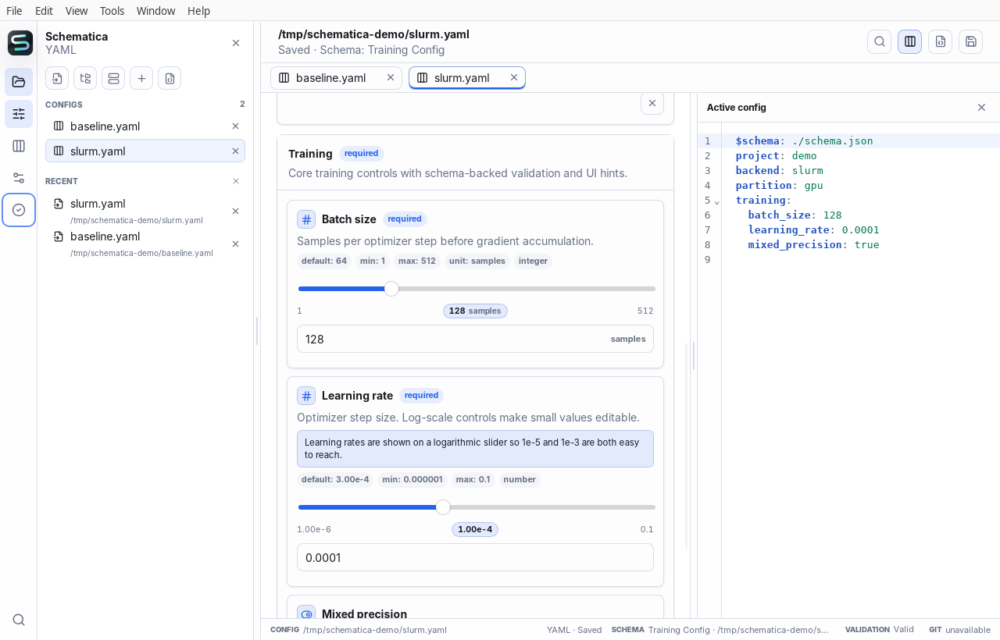
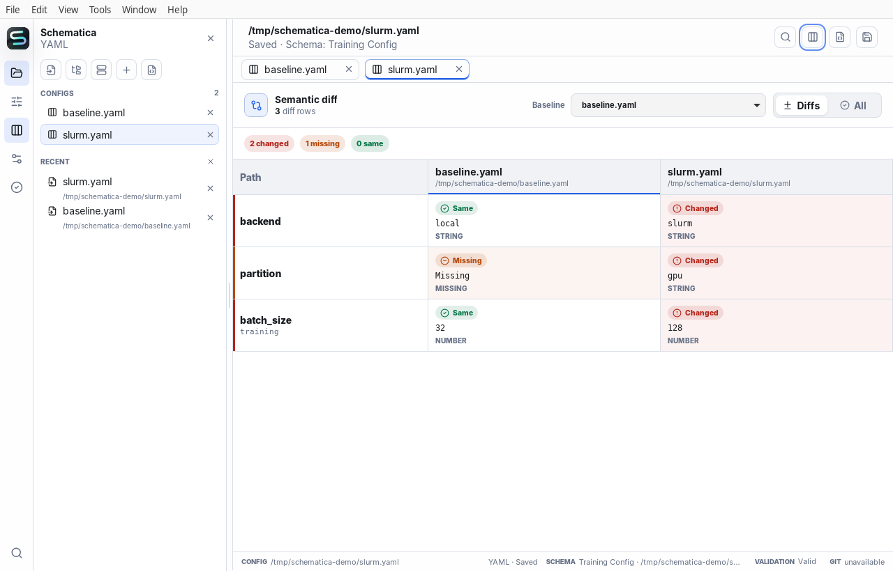
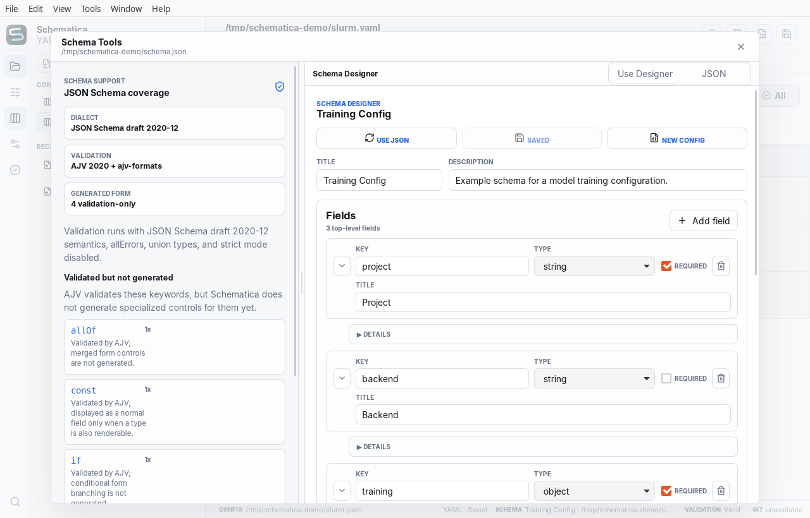

{kind=link}
Turn constraints into a usable form.
JSON Schema drives validation and controls. Optional x-ui hints add units, ordering, notes, and scale without making the schema proprietary.
Schema-aware config workbench
Schematica turns YAML, JSON, and TOML into a guided editing workflow—so researchers and engineers can catch configuration mistakes before an experiment, deployment, or batch job begins.

Built for configuration-heavy work
Install with confidence
Schematica detects this device and highlights the relevant path. You can always choose another platform.
Detected for this device
Choose a platform
Checking signed release availability…
Beta updates are manual. Back up or version-control important configs before editing them.
A safer loop
Configuration is part of the experiment. Schematica makes its constraints, differences, and final values visible without taking the file away from you.
Open local files or browse a remote host over SSH. Keep multiple run profiles in one workspace.
Enums, ranges, required fields, units, defaults, and descriptions become clear controls.
Compare values by configuration path, independent of whitespace, key order, or file format.
Use the same schema semantics in the desktop app, terminal, scripts, and CI.
Semantic comparison
A line diff makes structured data noisy. Schematica compares parsed values by path, then separates changed, missing, and identical settings.

Schema, when you have one
JSON Schema drives validation and controls. Optional x-ui hints add units, ordering, notes, and scale without making the schema proprietary.
Schematica can infer a practical form for ordinary documents, preserve access to the raw editor, and let you attach or design a schema later.

The same model in your terminal
The desktop app and CLI share the same parser, validator, path model, and semantic diff. What a person reviews can also become a repeatable check in CI.
Explore the CLI$ schematica validate slurm.yaml \
--schema schema.json
✓ Configuration is valid
$ schematica diff baseline.yaml slurm.yaml
2 changed · 1 missing · 0 same
~ backend local → slurm
~ training.batch 32 → 128
+ partition gpuSmall details, connected
Use the form and syntax-highlighted source side by side, with a split you can resize.
Discover SSH hosts, browse directories, authenticate when needed, and edit remote configs.
Issues point back to the affected field and path instead of becoming a detached error log.
Work with YAML, JSON, and TOML rather than moving configuration into a hosted database.
Use a command palette, tab navigation, resizable panes, and accessible native controls.
A lightweight Tauri desktop app for macOS, Windows, and Linux, plus a scriptable CLI.
Make configuration reviewable
Schematica is preparing its first public beta. Follow the repository for release builds and progress.